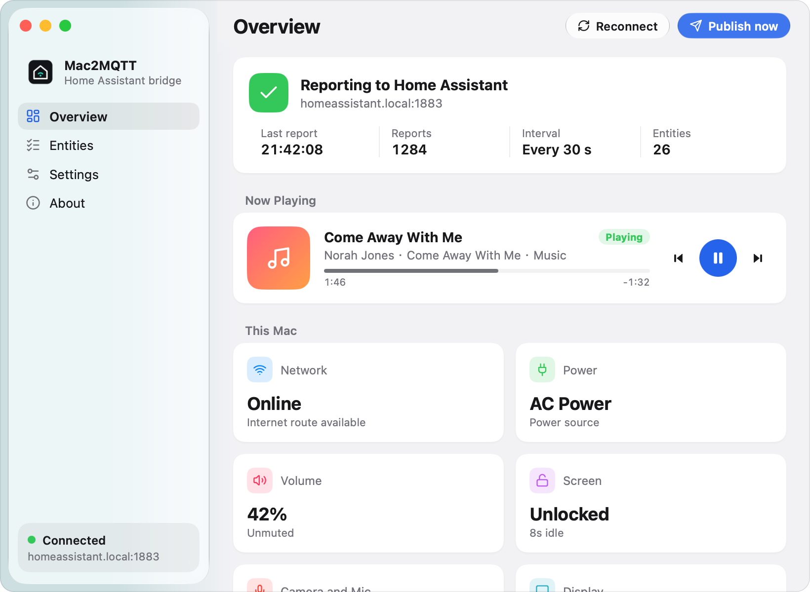
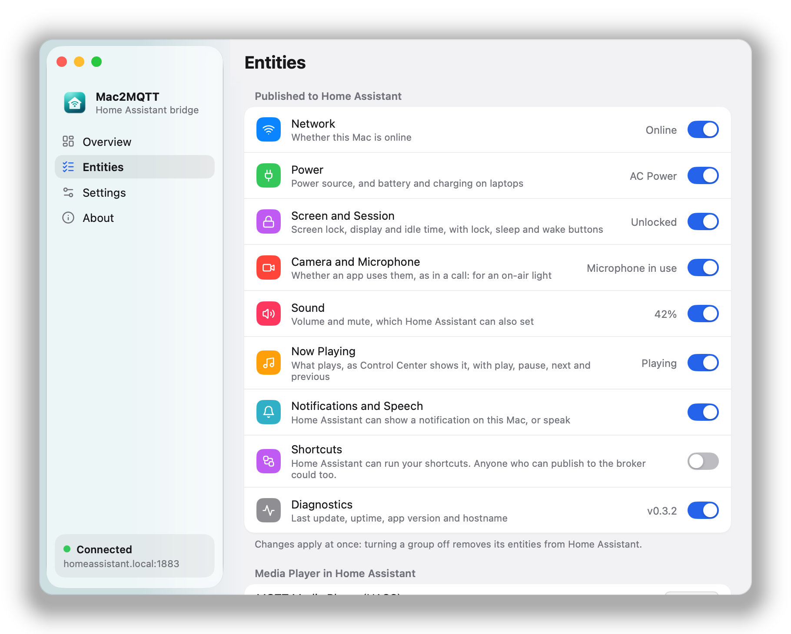

Now Playing
Whatever Control Center shows, from Music, Spotify or a video in Chrome, with play, pause, next and previous.
For Home Assistant · macOS 13 or later
A native menu bar app that reports what your Mac is doing to Home Assistant over MQTT, and lets Home Assistant control it.
Free and open source · Apple silicon and Intel

What it reports, what it controls
Whatever Control Center shows, from Music, Spotify or a video in Chrome, with play, pause, next and previous.
A slider and a switch in Home Assistant, set through macOS's own audio settings.
Whether the screen is locked and the display awake, with buttons to lock, sleep and wake it.
In use or not, within two seconds: turn on an on-air light during calls. Only for the devices your Mac has.
Home Assistant can show a notification on your Mac, or have it say that the laundry is done.
Run any of your shortcuts from an automation, with text as input. Off until you turn it on.
Power source, battery and charging on laptops, connectivity, idle time, and the Mac's model and macOS version.
Retained state, a last will, batched messages and quick reconnects, even over a slow VPN. And it updates itself.
One small binary in the menu bar, in English and Chinese, light and dark, opening at login if you like.
Made for Home Assistant
MQTT discovery creates one device for your Mac, named after it, with its model and macOS version. Choose what it publishes, group by group; what you turn off leaves Home Assistant at once.

Automations
Light a sign while you are on a call, lock the Mac when everyone leaves, pause the music when the doorbell rings, or hear when the washer is done.
# An on-air light while the Mac is in a call
triggers:
- trigger: state
entity_id: binary_sensor.mac_mini_microphone_in_use
actions:
- action: "light.turn_{{ trigger.to_state.state }}"
target:
entity_id: light.door_signInstall
Open the disk image and drag Mac2MQTT to Applications, or install it with Homebrew:
brew install --cask faintghost/tap/mac2mqtt
The one Home Assistant's MQTT integration uses, with discovery on: host, port and credentials.
It appears under Settings → Devices & services → MQTT, ready for dashboards and automations.
Built with MyGo
Mac2MQTT is built with MyGo by EGOIST, a Go desktop framework that draws its native UI itself, Liquid Glass included: no webview, no cgo, one small binary, with disk images and signed updates out of the box.